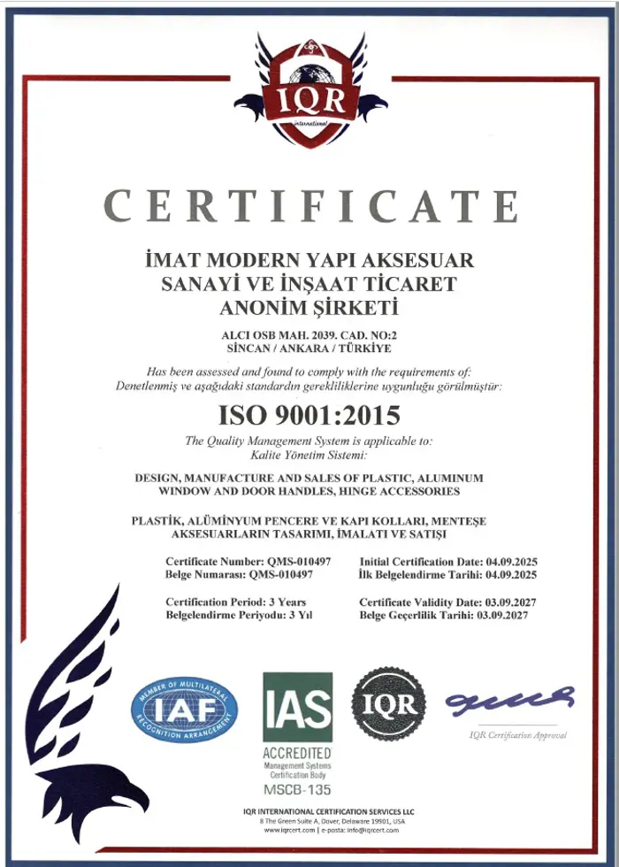
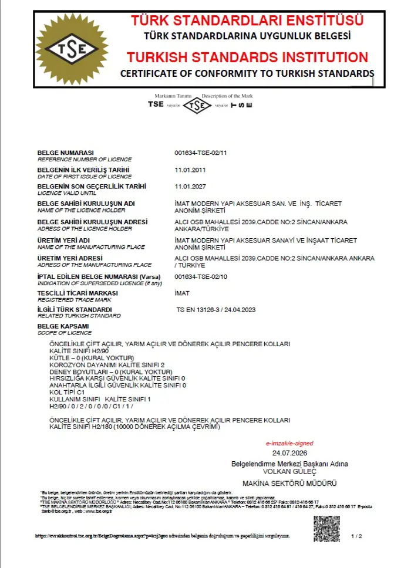
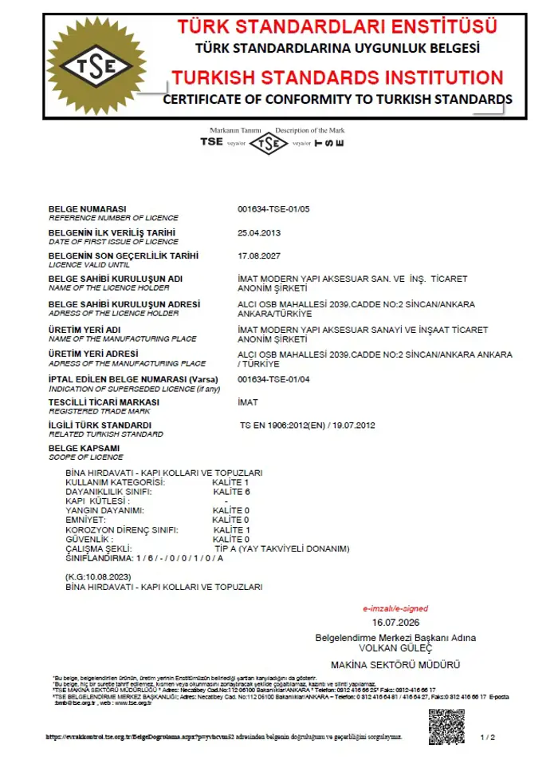
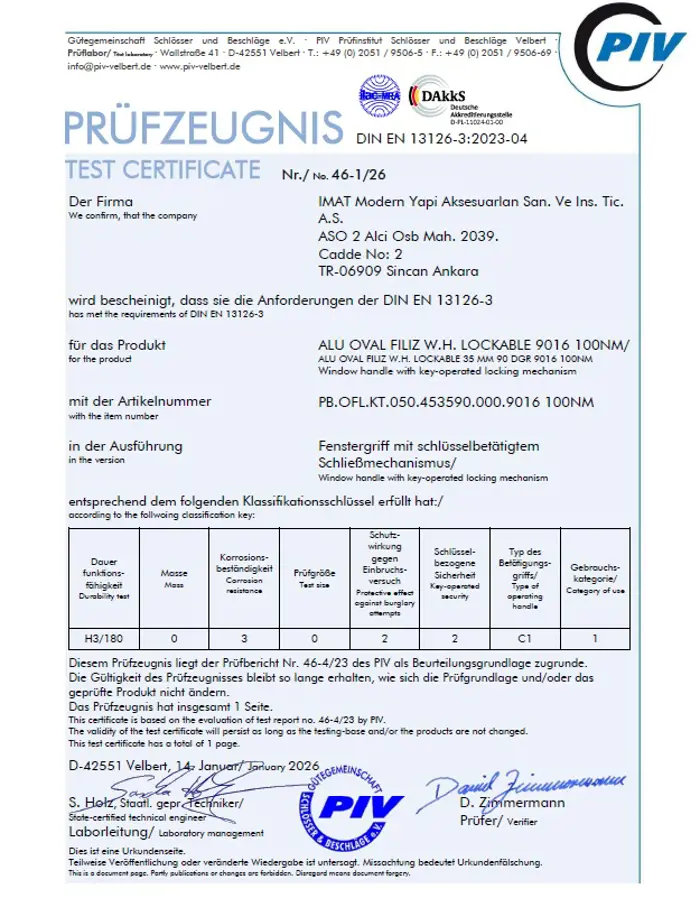

Üretim süreçlerimiz ve ürünlerimiz bağımsız kuruluşlar tarafından test edilip belgelendirilmiştir. Aşağıdaki sertifikaların asıl nüshalarını talep üzerine paylaşıyoruz.

Plastik ve alüminyum pencere ile kapı kolları ve menteşe aksesuarlarının tasarımı, imalatı ve satışını kapsayan Kalite Yönetim Sistemi belgemiz.
Geçerli
Kapı ve pencere donanımlarına ilişkin standarda uygunluk belgesi. Ürünlerimizin ilgili Türk Standartları kriterlerini karşıladığını gösterir.
Geçerli
Kapı kolu ve düğme ürünlerimizin malzeme, dayanım ve güvenlik kriterlerinin denetlendiğini belgeleyen uygunluk sertifikası.
Geçerli
Kilitli kol ürünlerimizin 100 Nm tork dayanımı testinden başarıyla geçtiğini belgeleyen bağımsız test sertifikası.
GeçerliSertifikalar bizim için bir bitiş noktası değil; her partide aynı kaliteyi üretmenin ölçülebilir kanıtı.
Hammadde ve yarı mamüller üretime girmeden önce kalite kriterlerine göre denetlenir.
Kalıp, döküm ve montaj hatlarında düzenli ölçüm ve numune kontrolleri yapılır.
Tork ve tekrar dayanımı testleriyle ürünlerin sahadaki performansı doğrulanır.